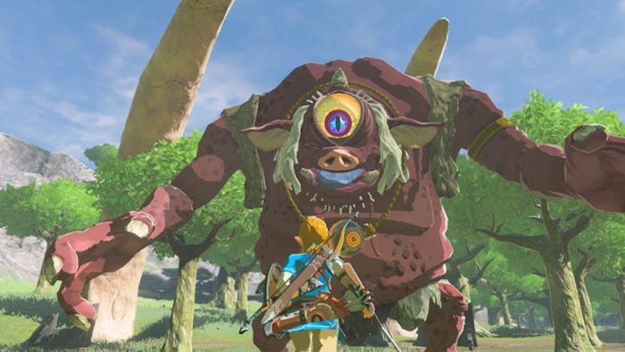

- 
-

Similar to the original 1986 The Legend of Zelda game, players are given little instruction and can explore the world freely. Tasks include collecting various items and gear to aid in objectives such as puzzle-solving or side quests. The world is unstructured and designed to encourage exploration and experimentation, and the main story quest can be completed in a nonlinear fashion.
Development of Breath of the Wild took place over five years, following the responses from some fans who wanted a larger game world in the series. Wanting to rethink the conventions of the series, Nintendo introduced elements such as an open world and a detailed physics engine. Monolith Soft, known for their work on the open world Xenoblade Chronicles series, assisted in designing landscapes and topography. The game was originally planned for release in 2015 as a Wii U exclusive but was delayed twice. Released on March 3, 2017, Breath of the Wild was a launch game for the Nintendo Switch and the final Nintendo-published game for the Wii U. Two waves of downloadable content were released throughout 2017 in an expansion pass.
Breath of the Wild received critical acclaim for its open-ended gameplay and attention to detail. Critics called it a landmark in open world game design, although it received minor criticism for its technical performance at launch. It won several game of the year awards and has since been cited as one of the greatest video games of all time. By 2021 it had sold nearly 26 million copies, making it one of the best-selling video games of all time. A sequel is set for release on the Switch in 2022. A crossover with the Dynasty Warriors series, Hyrule Warriors: Age of Calamity, was released in 2020.